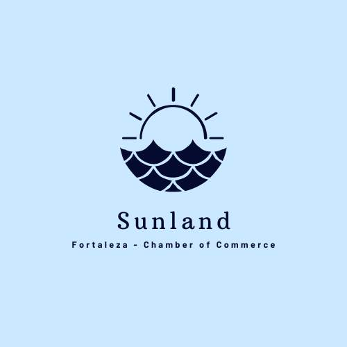

Logo
Purpose
The purpose of our website is to show the natural beauties of the city, the regional gastronomy and the services of Fortaleza and the state of Ceará, in the northeast region of Brazil, and with that attract investment to one of the regions that most attract tourists in Brazil. Our city and state is known for strong winds from August to December and with investment in infrastructure and publicity we could attract more and more people.